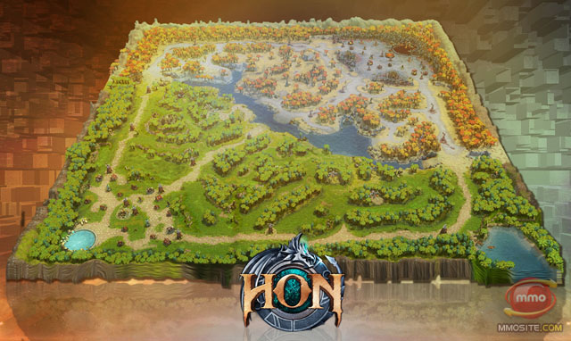

General
Heroes of Newerth pits two teams of players against each other: the Legion and the Hellbourne. Both teams are based at opposite corners of the map in their respective bases. Bases consist of buildings, creep spawn points, towers, a hero spawning pool, and a central structure. The goal of the game is to either destroy the central structure, the World Tree (Legion) or Sacrificial Shrine (Hellbourne), of the opposite base or force the other team to concede. Players achieve this by selecting heroes with unique skills to combat the other team.
Forests of Caldavar, the standard 5v5 map setting. This map harbors 3 different lanes with a river running through the middle of the map.Forests of Caldavar can be played as either casual or normal mode.Forests of Caldavar is an average game length of 30 minutes.
If you're looking for something competitive to sink some serious time into then Heroes of Newerth is one of the best options out there. GameZone